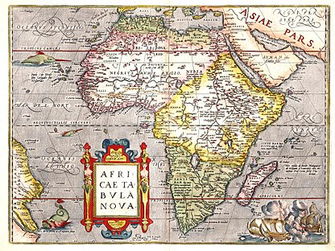
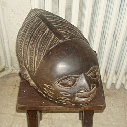

História da África
A História da África é conhecida no Ocidente por escritos que datam da Antiguidade Clássica. O homem passou a estar presente na África durante os primeiros anos da era quaternária ou os últimos anos da era terciária. A maioria dos restos de hominídeos fósseis que os arqueólogos encontraram, australopitecos, atlantropos, homens de Neandertal e de Cro-Magnon, em lugares diferenciados da África é a demonstração de que essa parte do mundo é importante no processo evolutivo da espécie humana e indica, até, a possível busca das origens do homem nesse continente. As semelhanças comparáveis da história da arte que vai entre o paleolítico e o neolítico são iguais às das demais áreas dos continentes europeu e asiático, com diferenças focadas em que regiões estão desenvolvidas. A maioria das zonas do interior do continente, meio postas em isolamento, em contraposição ao litoral, ficaram permanentes em estágios do período paleolítico, apesar da neolitização ter sido processada no início em 10 000 a.C., com uma diversidade de graus acelerados.
O Norte da África é a região mais antiga do mundo. A civilização egípcia floresceu e inter-relacionou-se com as demais áreas culturais do mundo mediterrâneo, motivos pelas quais essa região foi estreitamente vinculada, há milhares de séculos, depois que a civilização ocidental foi geralmente desenvolvida. As colônias pertencentes à Fenícia, Cartago, a romanização, os vândalos aí fixados e o Império Bizantino influente são os fatores pelos quais foi deixada no litoral mediterrâneo da África uma essência da cultura que posteriormente os árabes assimilaram e modificaram. Na civilização árabe foi encontrado um campo de importância em que foi expandido e consolidada a cultura muçulmana no Norte da África. O islamismo foi estendido pelo Sudão, pelo Saara e pelo litoral leste.[2] Nessa região, o islamismo é a religião pela qual foram sendo seguidas as rotas de comércio do interior da África (escravos,[3] ouro, penas de avestruz) e estabelecidos encraves marítimos (especiarias, seda) no Oceano Índico.[4] Simultaneamente, na África negra foram conhecidos vários impérios e estados que aí floresceram. Estes impérios e estados nasceram de grandes clãs e tribos submetidos a um só soberano poderoso com características próprias do feudalismo e da guerra. Entre esses impérios de maior importância figuram o de Axum, na Etiópia, que teve sua chegada ao apogeu no século XIII; o de Gana, que desenvolveu-se do século V ao XI e os estados muçulmanos que o sucederam foram o de Mali (do século XIII ao XV) e o de Songai (do século XV ao XVI); o Reino de Abomei do Benim (século XVII); e a confederação zulu do sudeste africano (século XIX).
Durante o século XV os exploradores vindos da Europa chegaram primeiramente no litoral da África Ocidental. O estímulo dado a essa exploração foi uma forma de buscar novos caminhos para as Índias, após o comércio ser fechado por parte dos turcos no leste do Mar Mediterrâneo. Os colonizadores de Portugal, da Espanha, da França, da Inglaterra e dos Países Baixos foram os competidores do novo caminho a fim de ser dominado por meio de feitorias no litoral e portos de embarque para comercializar os escravos. Concomitantemente, foram realizadas as primeiras viagens científicas que adentraram o interior do continente: Charles-Jacques Poncet na Abissínia, em 1700; James Bruce em 1770, procurando o local onde nasce o Nilo; Friedrich Konrad Hornermann viajando no deserto da Líbia sobre a garupa de um camelo, em 1798; Henry Morton Stanley e David Livingstone na bacia do Congo, em 1879.[8][9][10] A partir do século XIX, as potências europeias interessadas política e economicamente representavam estímulo para que o interior da África seja penetrado e colonizado. As potências europeias desejavam a criação de impérios que fossem estendidos de litoral a litoral, mas isso fez com que o Reino Unido (pelo qual foi conseguida a ocupação de uma faixa de norte a sul, do Egito à África do Sul, além de demais zonas colonizadas no golfo da Guiné), a França (que estabeleceu-se no noroeste da África, em parte do equador africano e em Madagascar) e, em quantidade pequena, Portugal (Angola, Moçambique, Guiné e uma diversidade de ilhas estratégicas), Alemanha (Togo, Tanganica e Camarões), Bélgica (Congo Belga), Itália (Líbia, Etiópia e Somália) e Espanha (parte do Marrocos, Saara Ocidental e encraves na Guiné) brigassem entre si. A partilha da África foi formalmente consumada na Conferência de Berlim de 1884-1885, na qual firmou-se o princípio da ocupação efetiva como forma de legitimar as colônias empossadas.
Devido ao regime colonialista estabelecido no continente, foram destruídas e modificadas as estruturas sociais, econômicas, políticas e religiosas da maioria do território da África negra. As colônias que proclamaram sua independência, processo emancipatório que iniciou-se após a Segunda Guerra Mundial e concluiu-se principalmente de 1960 até 1975, estiveram sob ameaça da gravidade de problemas de integração nacional, que resultaram das fronteiras arbitrárias como legado do sistema colonialista, além da pobreza (o rápido crescimento da população africana é mais elevado do que o número de alimentos produzidos). Como dependem econômica e politicamente das antigas metrópoles, a ineficiência da administração, as tribos e as ideologias conflitantes entre si, todos esses fatores agravantes fizeram com que a população das cidades crescesse. Estas são as principais barreiras que impedem que os novos países desenvolvam-se. Os governos desses países, majoritariamente com características de forças armadas ou de presidencialismo, têm tendência à adoção de políticas de socialização que garantem a libertação dos países das potências estrangeiras. A cooperação coletiva para a solução desses problemas deu origem a uma diversidade de organizações supranacionais que baseiam-se na ideia do pan-africanismo, ou a totalidade dos povos africanos unidos no entorno dos interesses comuns; a de maior importância é a Organização da Unidade Africana (OUA)
Arte
A arte de África representa os usos e costumes das tribos africanas. O objeto de arte é funcional e expressam muita sensibilidade. Nas pinturas, assim como nas esculturas, a presença da figura humana identifica a preocupação com os valores étnicos, morais e religiosos. A escultura foi uma forma de arte muito utilizada pelos artistas africanos usando-se o ouro, bronze e marfim como matéria prima. Representando um disfarce para a incorporação dos espíritos e a possibilidade de adquirir forças mágicas, as máscaras têm um significado místico e importante na arte africana sendo usadas nos rituais e funerais. As máscaras são confeccionadas em barro, marfim, metais, mas o material mais utilizado é a madeira. Para estabelecer a purificação e a ligação com a entidade sagrada, são modeladas em segredo na selva. Visitando os museus da Europa Ocidental é possível conhecer o maior acervo da arte antiga africana no mundo.
As origens da história da arte africana (Africa) está situada muito antes da história registrada. A arte africana em rocha no Saara, em Níger (Nigéria), conserva entalhes de 6000 (seis mil) anos.[1] As esculturas mais antigas conhecidas são dos Nok cultura da Nigéria, 500 a.C..(antes de Cristo) Junto com a África Subsariana, as artes culturais das tribos ocidentais, artefatos do Egito antigo, e artesanatos indígenas do sul também contribuíram grandemente para a arte africana. Muitas vezes, representando a abundância da natureza circundante, a arte foi muitas vezes interpretações abstratas de animais, vida vegetal, ou desenhos naturais e formas.
Métodos mais complexos de produção de arte foram desenvolvidos na África Subsaariana, por volta do século X, alguns dos mais notáveis avanços incluem o trabalho de bronze do Igbo Ukwu e a terracota e trabalhos em liga de metal e fundição em bronze e , muitas vezes ornamentados com marfim e pedras preciosas, tornou-se altamente prestigiado, em grande parte da África Ocidental, às vezes sendo limitado ao trabalho dos artesãos e identificado com a Família real|realeza, como aconteceu com os Bronzes do Benim.
Muitas das chamadas artes tradicionais da África estão sendo ainda trabalhadas, entalhadas e usadas dentro de contextos tradicionais. Mas, como em todos os períodos da arte, importantes inovações também têm sido assimiladas, havendo uma coexistência dos estilos e modos de expressão já estabelecidos com essas inovações que surgem. Nos últimos anos, com o desenvolvimento dos transportes e das comunicações dentro do continente, um grande número de formas de arte tem sido disseminado por entre as diversas culturas africanas.A arte Africana tem uma coisa interessante. Você pode achar semelhança entre dois países sem eles se assemelharem.Além das próprias influências africanas, algumas mudanças têm sua origem em outras civilizações. Por exemplo, a arquitetura e as formas islâmicas podem ser vistas hoje em algumas regiões da Nigéria, em Mali, Burkina Faso e Níger. Alguns desenhos e pinturas do leste indiano têm bastante similaridade em suas formas com as esculturas e máscaras de artistas dos povos Dibibio e Efik que se estabelecem ao sul da Nigéria. Temas cristãos também tem sido observados nos trabalhos de artistas contemporâneos, principalmente em igrejas e catedrais africanas. Vê-se ainda na África, nos últimos anos, um desenvolvimento de formas e estruturas ocidentais modernas, como bancos, estabelecimentos comerciais e sedes governamentais.
Os turistas também tem sido responsáveis por uma nova demanda das artes, particularmente por máscaras decorativas e esculturas africanas feitas de marfim e ébano. O desenvolvimento das escolas de arte e arquitetura em cidades africanas, tem incentivado os artistas a trabalhar com novos meios, tais como cimento, óleo, pedras, alumínio, com uma utilização de diferentes cores e desenhos. Ashira Olatunde da Nigéria e Nicholas Mukomberanwa de Zimbabwe estão entre os maiores patrocinadores desse novo tipo de arte na África.
Máscaras africanas
As "máscaras" são as formas mais conhecidas da plástica africana. Constituem síntese de elementos simbólicos mais variados se convertendo em expressões da vontade criadora do africano.
Foram os objetos que mais impressionaram os povos europeus desde as primeiras exposições em museus do Velho Mundo, através de milhares de peças saqueadas do patrimônio cultural da África, embora sem reconhecimento de seu significado simbólico.
A máscara transforma o corpo do bailarino que conserva sua individualidade e, servindo-se dele como se fosse um suporte vivo e animado, encarna a outro ser; gênio, animal mítico que é representando assim momentaneamente. Uma máscara é um ser que protege quem a carrega. Está destinada a captar a força vital que escapa de um ser humano ou de um animal, no momento de sua morte. A energia captada na máscara é controlada e posteriormente redistribuída em benefício da coletividade. Como exemplo dessas máscaras destacamos as Epa e as Gueledeé ou Gelede
Culinária
Na África austral e oriental, principalmente junto à costa, é o milho, moído em grandes pilões ou nas modernas moagens, que serve para fazer o substrato da culinária africana. Nas regiões mais afastadas da costa, é o sorgo o cereal indígena que cumpre este papel, enquanto que na África ocidental o fufu é feito com os tubérculos do inhame e outras plantas típicas dessas paragens. A mandioca, outro visitante de outras paragens que se radicou em África, é igualmente uma das fontes de energia utilizada nas regiões mais secas.
Então uma refeição “tipicamente africana” – normalmente consumida ao fim da tarde, depois do dia de trabalho – é formada por um grande prato de arroz ou massa de um dos vegetais mencionados acima, que é normalmente dividido criteriosamente pelos membros do agregado familiar, e uma panela com um guisado ou uma salada que acompanha um peixe ou naco de carne grelhada. Em relação a este “caril” (como se chama ao acompanhamento mais ou menos proteico da refeição em Moçambique), a divisão já tem regras mais rígidas, relacionadas com a divisão de trabalho na sociedade tradicional: o chefe da família tem direito ao melhor bocado, a seguir os restantes adultos e as crianças ficam praticamente com os restos, uma vez que durante as suas brincadeiras elas sempre vão comendo frutos ou mesmo um pássaro que lhes apareça à frente.
Isto refere-se evidentemente às famílias que vivem nas zonas rurais – nas cidades, apesar da maior disponibilidade e variedade de alimentos, só uma pequena parte da população tem acesso a uma alimentação melhor que no campo. A maior diferença entre a refeição do africano rural e do pobre das cidades é o conjunto dos utensílios usados para cozinhar e servir os alimentos e do combustível utilizado; e, mesmo assim, as famílias rurais que têm ou tiveram um dos seus membros a trabalhar num país diferente por contrato, têm normalmente louça de cozinha e de mesa própria das cidades.
O “caril” típico em África é um guisado de vegetais, por vezes reforçado com uma pequena quantidade de peixe ou carne seca mas, na maior parte das vezes, a proteína é essencialmente vegetal. É comum em várias regiões usar amendoim pilado como base do caril; o feijão, de que existe um grande número de variedades locais, é também uma importante fonte de proteínas. Naturalmente que as famílias de pescadores e, em geral, as pessoas que vivem junto à costa têm uma maior proporção deste tipo de proteína nas suas dietas mas, pelo contrário, os agricultores, que normalmente possuem também animais domésticos, não usam com tanta frequência a sua carne na alimentação diária. A carne, mesmo de galinha, é muitas vezes a “proteína do domingo” ou de celebrações especiais (casamentos, culto dos mortos, etc.)
Esta descrição pode dar a entender que a culinária africana é pobre ou monótona, mas isso não é verdade – o que se pretendeu foi alinhar alguns traços comuns da dieta dos africanos, que não se pode considerar pouco nutritiva nem insípida. Para além dos frutos da terra que dão, por exemplo, o azeite de dendê, os africanos adoptaram e cultivam mesmo um grande número de especiarias provenientes do resto do mundo – a ilha de Zanzibar, na Tanzânia, foi durante algum tempo o maior produtor mundial de cravo da Índia, aparentemente originário da indonésia . A África, em geral, adoptou igualmente as receitas culinárias dos povos que a visitaram ou que ali se radicaram e um bom exemplo desta mestiçagem alimentar é a feijoada à moda do Ibo.
Religião
A Religião na África é diversificada. A maioria dos africanos são adeptos do cristianismo e islamismo. Muitos também praticam as religiões tradicionais africanas. Em 2002, os cristãos eram 45% da população africana, e os muçulmanos 40,6%.
O Norte da África tem uma maioria muçulmana há vários séculos, contudo a África subsaariana viveu uma dramática mudança religiosa no século XX. Em 1900, cristãos (9%) e muçulmanos (14%) eram uma minoria na África subsaariana, ao passo que 76% da população seguia religiões tradicionais africanas.[2] Muitas dessas religiões foram trazidas para as Américas por meio do comércio de escravos e deram origem às religiões afro-americanas, como o candomblé e a umbanda no Brasil, a santeria em Cuba e o vodu no Haiti.
Ao longo do século XX, com a penetração da colonização europeia no interior do continente, muitos africanos abandonaram suas crenças ancestrais e se converteram sobretudo ao cristianismo, mas também houve crescimento do islamismo. Em 2010, os seguidores de religiões tradicionais africanas perfaziam 13% na África subsaariana, entrementes cristãos (57%) e muçulmanos (29%) formavam a maioria. Porém, de forma sincrética, muitos africanos ainda guardam influências das religiões ancestrais, como na crença do poder protetivo de amuletos (no Brasil conhecidos como balangandãs). 27% dos africanos subsaarianos acreditam que sacrifícios de animais para os espíritos ou para os ancestrais os protegem de coisas más (25% dos cristãos e 30% dos muçulmanos creem nisso).
A África subsaariana é uma das regiões mais religiosas do mundo: mais de 80% da população afirma que a religião é muito importante nas suas vidas. Em comparação, na Europa Ocidental, apenas cerca de 20% dizem o mesmo.
Tradições religiosas por região
- Norte da África
- África Ocidental
- África Central
- África Oriental
- Sul da África
Mitologia berbere
Mitologia Egípcia
Mitologia Akan
Mitologia Ashanti (Gana)
Mitologia fon (Fon)
Odinani dos igbos (Nigeria, Camarões)
Mitologia Efik (Nigéria, Camarões)
Mitologia isoco (Nigéria)
Mitologia iorubá (Nigéria, Benim)
Mitologia Bushongo (Congo)
Mitologia Bambuti (Pigmeu) (Congo)
Mitologia Lugbara (Congo)
Mitologia Akamba (Leste do Quénia)
Mitologia Dinka (Sudão)
Mitologia Lotuko (Sudão)
Mitologia Masai (Quénia, Tanzânia)
Mitologia Khoikhoi
Mitologia Lozi (Zâmbia)
Mitologia Tumbuka (Malawi)
Mitologia Zulu (África do Sul)
Referências
https://pt.wikipedia.org/wiki/Hist%C3%B3ria_da_%C3%81fricahttps://pt.wikipedia.org/wiki/Arte_de_%C3%81frica
https://pt.wikipedia.org/wiki/Culin%C3%A1ria_da_%C3%81frica
https://pt.wikipedia.org/wiki/Religi%C3%B5es_tradicionais_africanas
https://pt.wikipedia.org/wiki/Religi%C3%A3o_em_%C3%81frica